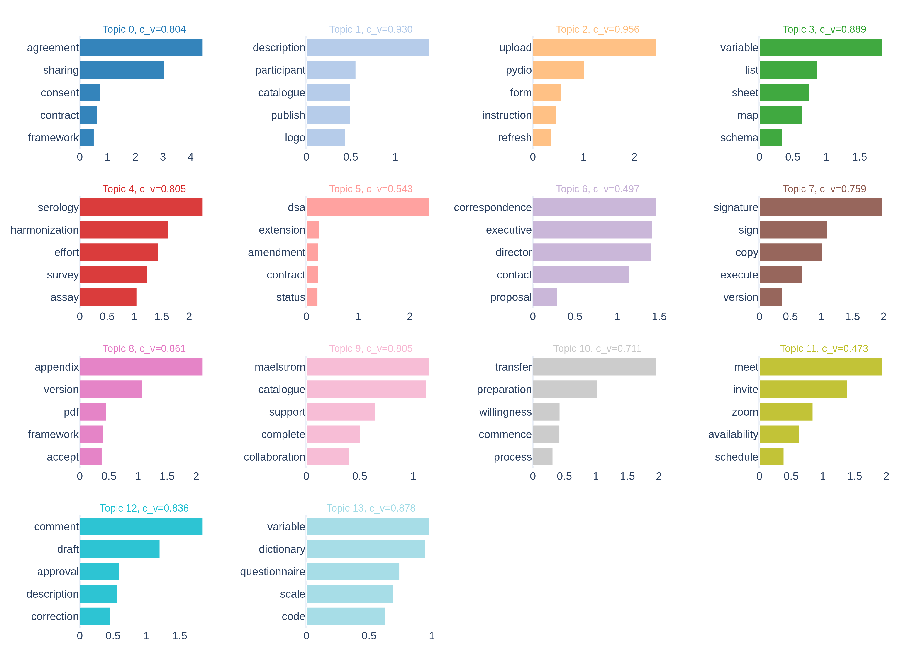
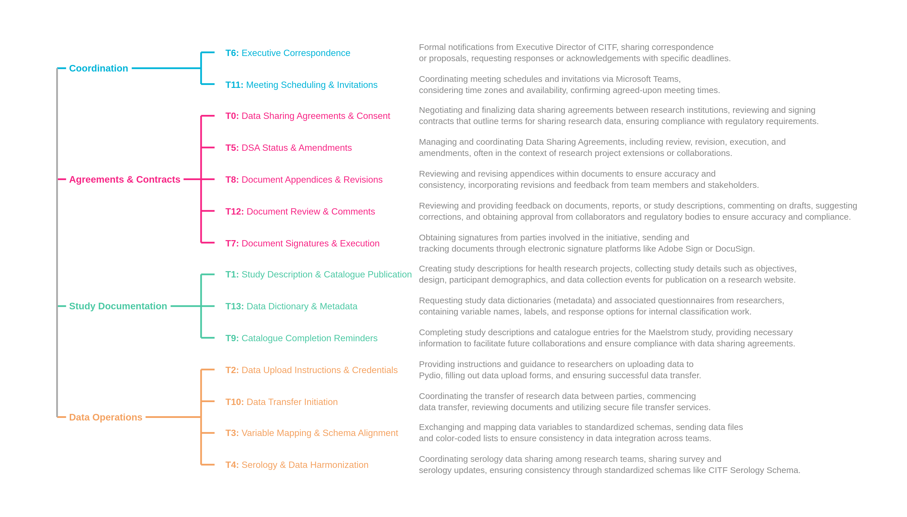
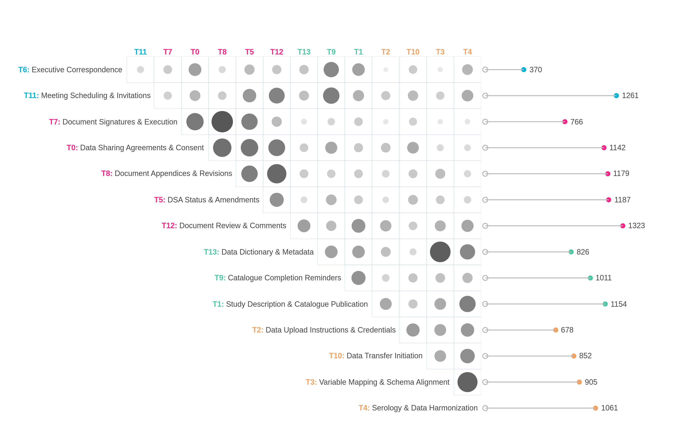
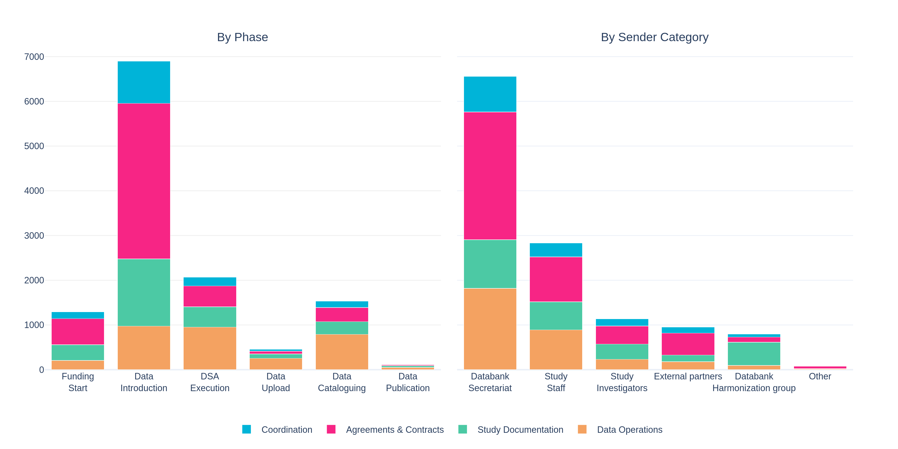
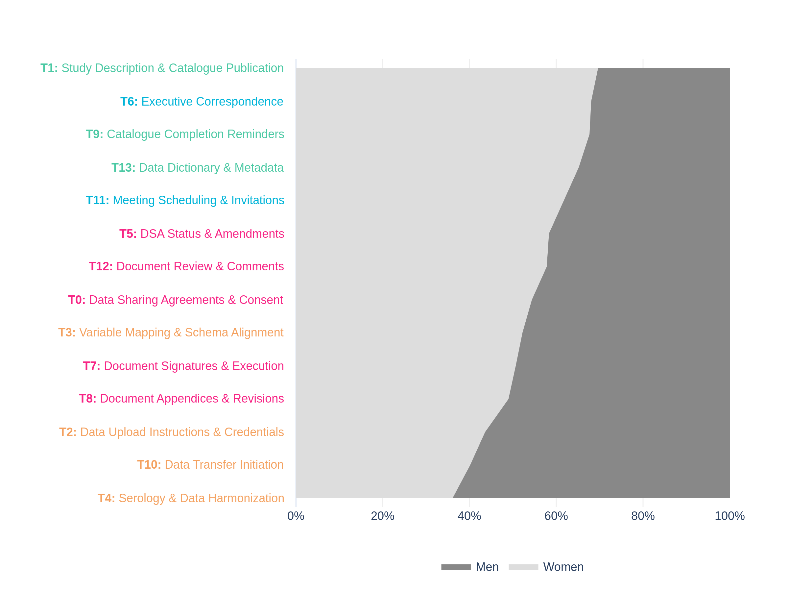

LLM-assisted topic modelling of Canadian COVID-19 Immunity Task Force data sharing operations
![]()
Background: xxx.
Methods: xxx.
Results: xxx.
Conclusions: xxx.
This study analyzes 6,833 emails from the inbox of a central operations manager at the Canadian COVID-19 Immunity Task Force (CITF) Databank, spanning correspondence with 100 partnering studies from February 2021 to September 2025, to characterize the operational processes of large-scale health research data sharing. Emails were preprocessed using rule-based cleaning and automated de-identification, with French text translated into English using neural machine translation. Non-negative Matrix Factorization (NMF) was applied for topic modeling, selecting k=14 topics based on coherence, granularity, and topic diversity. Topic labels and thematic groupings were generated using a locally deployed large language model (Meta-Llama-3.1-8B-Instruct) and refined by the research team. Topics were analyzed across six phases of the data sharing lifecycle and five sender categories. NMF identified 14 topics organized into four thematic categories: Agreements & Contracts, Data Operations, Study Documentation, and Coordination. Governance and data operations workstreams ran largely in parallel, with contractual and administrative concerns persisting throughout all lifecycle phases rather than being resolved early. Coordination labour was highly concentrated among Databank personnel (up to 116 emails per sender) relative to study teams (5–7 emails per sender), with women more concentrated in Study Documentation topics and men in Data Operations topics. The 18:1 ratio of administrative to technical time reveals that data sharing is primarily an administrative and governance challenge, with direct implications for how Canadian research data infrastructure is resourced, governed, and staffed under national policy frameworks.
topic modeling, research data sharing, data governance, COVID-19, Canada
Background
[1] Timely access to health research data is essential for evidence-informed public health decision-making, as demonstrated during the COVID-19 pandemic when the rapid aggregation of epidemiological data across institutions and jurisdictions was critical for coordinated response (Yehudi et al. 2025; Rigby et al. 2024). Despite growing policy commitments to open data, including Canada’s Tri-Agency Research Data Management (RDM) Policy and the initiatives of the Digital Research Alliance of Canada, a recent report by Canada’s Chief Science Advisor identified fragmented data governance, inconsistent institutional practices, and insufficient workforce capacity as critical barriers to building a national scientific data ecosystem (Chief Science Advisor of Canada 2025). These findings echo a decade of research on technical, motivational, legal, and ethical barriers to health data sharing (Panhuis et al. 2014; Casey, Li, and Berry 2016), though only a small fraction of that evidence is derived from empirical study of actual data sharing operations.
[2] Most of what we know about research data sharing comes from self-reported surveys and post-hoc reflections (Panhuis et al. 2014; Shabani and Borry 2016; Shabani, Thorogood, and Borry 2016). The actual day-to-day work of negotiating data sharing agreements, onboarding partner studies, and managing the technical and administrative dimensions of data transfer across institutions has rarely been observed directly. This gap is consequential: stakeholders consistently underestimate the labour required to coordinate large-scale data sharing, and policymakers lack empirical grounding for decisions about how to staff, fund, and organize data sharing operations (Choroszewicz 2022; Casey, Li, and Berry 2016).
[3] Computational analysis of organizational correspondence offers a promising approach for studying coordination work as it actually unfolds. Topic modeling and related natural language processing techniques have been applied to email archives to characterize patterns of collaboration in large projects (Piccolo et al. 2018; Indig et al. 2023), and to health-related text data more broadly (Lossio-Ventura et al. 2021). Recent advances in combining non-negative matrix factorization (NMF) with large language model (LLM) assisted annotation have further improved the interpretability of topic modeling outputs (Wanna et al. 2024; Janssens, Bogaert, and Van den Poel 2025; Tan and D’Souza 2025).
[4] The Canadian COVID-19 Immunity Task Force (CITF) Databank offers a rare opportunity to apply these methods to the study of health data sharing governance. Established in 2020 to coordinate serological and immunological research across Canada, the CITF Databank integrated over 150,000 health records from over 100 partnering studies spanning diverse institutional settings and geographic locations. The operational work of coordinating data sharing with all these studies was conducted largely through email correspondence managed by a central operations team, generating a primary record of data sharing coordination as it actually unfolded in real time.
[5] This study analyzes that correspondence using topic modeling to characterize the operational processes of research data sharing at scale. Specifically, we examine: (1) what Databank personnel and their collaborators communicated about, and how these topics were distributed across the data sharing lifecycle; (2) how coordination labour was distributed across different institutional roles; and (3) what the distribution of topics across phases and roles reveals about the governance and administrative demands of large-scale data sharing. The findings carry direct implications for Canadian research data infrastructure policy, particularly as institutions develop capacity to meet Tri-Agency RDM obligations and prepare for future public health emergencies.
Methods
Data Source and Preprocessing
[6] This study analyzes email correspondence generated during the operations of the Canadian COVID-19 Immunity Task Force (CITF) Databank, a pan-Canadian initiative that integrated individual-level health records from partnering studies conducted across Canada between 2020 and 2025. The analytical corpus comprises emails from the inbox of a central CITF Databank operations manager responsible for coordinating data sharing with all partnering studies. Emails span the period from February 2021 to September 2025. Future work will expand the corpus to include additional team members’ inboxes, enabling a more comprehensive view of coordination across the initiative.
[7] Emails were preprocessed using a multi-step pipeline to remove non-substantive content and protect participant privacy. Rule-based cleaning steps removed confidentiality disclaimers, meeting-invite text, forwarded-message headers, and institutional email signatures. All messages were de-identified using Microsoft Presidio (Alrazihi, Biswas, and George 2025; Kotevski et al. 2022), an open-source framework for automated detection and anonymization of personally identifiable information, with personal names, email addresses, and URLs replaced with anonymized placeholders. Duplicate messages were removed within studies using normalized text hashing. Documents were filtered to retain only emails with non-missing sent dates and appropriate length, excluding near-empty or excessively long messages. The CITF Databank operated bilingually; bilingual messages were processed to retain English content where identifiable, and remaining French text was translated into English using OPUS-MT neural machine translation. This pipeline yielded a final analytical sample of 6,833 emails involving 491 unique senders across 100 studies (see Figure 1).

Data Analysis
[8] We evaluated four topic modeling approaches to identify the method best suited to this corpus: K-Means clustering, Latent Dirichlet Allocation (LDA), BERTopic, and Non-negative Matrix Factorization (NMF) (Murshed et al. 2023; Zubiaga 2024). Methods were compared at their peak coherence score (c_v) using standard English stopwords as a baseline. NMF outperformed all alternatives (c_v = 0.654), while K-Means produced an overly dominant cluster (50.8% of emails), LDA showed the lowest coherence (c_v = 0.517), and BERTopic assigned 32.3% of emails as outliers. Following additional domain-specific stopword curation and part-of-speech filtering, NMF performance improved across all values of k tested (k = 5 to 20). Although k = 5 achieved the highest coherence (c_v = 0.820), it produced only five broad topics with 35.6% of emails in the largest cluster. We selected k = 14 as the optimal balance between coherence (c_v = 0.768, NPMI = 0.170), granularity (lowest maximum cluster size at 10.7%), and topic diversity (0.914) (Rahimi et al. 2024).
[9] To facilitate interpretation of the 14 NMF topics, we used a locally deployed open-source large language model to generate topic labels, thematic groupings, and topic descriptions (Wanna et al. 2024; Janssens, Bogaert, and Van den Poel 2025; Tan and D’Souza 2025). Four open-source models were evaluated: Mistral-7B-Instruct-v0.3, Meta-Llama-3.1-8B-Instruct, Qwen2.5-7B-Instruct, and Gemma-2-9b-it, each receiving the top 5 keywords and 5 representative emails for all 14 topics simultaneously. Meta-Llama-3.1-8B-Instruct produced the most descriptive and semantically complete labels and was selected for subsequent steps. Using zero-shot prompts, the model was queried to: (1) generate 2–5 word topic labels from keywords and representative emails; (2) group labels into thematic categories; and (3) generate 2–3 sentence topic descriptions from keywords and up to 15 representative emails. Tasks were run across multiple temperature settings (0.0, 0.2, 0.4, 0.5, 0.7) and random seeds to ensure stability. All outputs were reviewed and refined by the research team to ensure face validity and alignment with domain knowledge. Local deployment ensured that no email data left secure servers at any stage of analysis.
[10] To examine relationships between topics, we computed normalized pairwise co-occurrence scores across all 14 topics (Stevenson et al. 2023). For each pair of topics, the co-occurrence score was calculated as the proportion of shared email assignments relative to the smaller of the two topics. Email-to-topic assignments were based on a 15% probability threshold applied to the normalized NMF weight matrix. This threshold was selected to capture substantive secondary topic assignments while filtering out most tertiary contributions, and was validated through research team review of representative emails. Under this scheme, 27.3% of emails were assigned to a single topic, 47.6% to two topics, and 25.1% to three or more topics (mean = 2.01 topics per email). Co-occurrence scores range from 0 (no co-occurrence) to 1 (complete overlap), with higher values indicating topics that are more likely to appear together within the same emails.
[11] To examine how topics were distributed across the data sharing lifecycle, each email was mapped to one of six sequential phases: Funding Start, Data Introduction, Data Sharing Agreement (DSA) Execution, Data Upload, Data Cataloguing, and Data Publication. Phase assignments were based on milestone dates recorded for each study. Seven studies were excluded from phase analysis due to non-sequential milestone dates, leaving 6,167 emails from 93 studies. For sender analysis, each email sender was classified into one of five categories based on their institutional role: Databank Secretariat, Study Staff, Study Investigators, External Partners, and Harmonization Group. For both phase and sender analyses, topic assignments were based on the 15% probability threshold described above. Email-to-sender ratios were computed for each sender category to quantify the intensity of operational engagement across roles.
[12] To examine the distribution of coordination labour by gender, sender first names were coded using a probabilistic approach combining the gender_guesser library1 with manual corrections for ambiguous and non-Western names, achieving coverage of 95.2% of emails (6,504 of 6,833). Gender was classified as women or men; non-binary and gender-diverse identities are not captured by this method, which represents a limitation of the approach.
Results
[13] The analytical corpus comprises 6,833 emails from the inbox of a central CITF Databank coordinator, spanning correspondence with 100 participating studies from February 2021 to September 2025, involving 491 unique senders. NMF identified 14 topics organized into four thematic categories. The 14 topics identified by the model and their five most characteristic terms are shown in Figure 2. The x-axis reflects each term’s NMF component weight, a non-negative score indicating the strength of association between that term and the topic, derived from the factorization of the Term Frequency-Inverse Document Frequency (TF-IDF) matrix. Higher scores indicate terms that are more strongly and distinctively associated with that topic relative to others in the vocabulary.

[14] Re-order these so they appear in order of their c_v values. Can we say something about the meaningfulness of these topics? Which ones are most cohesive and representative of some recognizable reality?
[15] The topic labels, thematic groupings, and descriptions generated through LLM-assisted annotation are shown in Figure 3.

[16] It is somewhat interesting that the topic modelling identified more discrete kinds of work for agreements and contracts than for coordination. This calls attention to the variety of tasks involved in the work. Next step is to see whether these topics under the agreements and contracts topic correspond with specific phases. Do they happen in the order in which they expect them to occur? Which topics occur throughout the phase, which may indicate their cyclical/discursive rather than definitive nature (i.e., I would expect T12 to occur more than one time throughout the span of time, whereas T7 would happen only one time at the end of the process.).
Co-occurrence Analysis of Topic Relationships
[17] Topic co-occurrence analysis revealed two largely separate clusters of topics within the corpus, with Agreements and Contracts (5 topics, 3,793 multi-topic email assignments), Data Operations (4 topics, 2,772), Study Documentation (3 topics, 2,602), and Coordination (2 topics, 1,612) (see Figure 4). Core governance topics, including Document Signatures, Document Appendices, and DSA Status, co-occurred frequently with each other (co-occurrence scores: 0.20–0.28) but rarely with core technical topics such as Data Upload Instructions, Variable Mapping, and Data Transfer Initiation (co-occurrence scores: 0.02–0.06). This structural separation suggests that governance and data operations workstreams ran largely in parallel rather than in close coordination.
[18] Can we add p values to indicate whether these relationships are statistically significant?

[19] The variable length of the horizontal bars seems a bit distracting, at least from my own perspective.
[20] The primary point of convergence between these two clusters was Document Review and Comments, the most frequently assigned topic in the corpus (1,323 email assignments) and the most broadly connected across all thematic categories (co-occurrence scores: 0.08–0.25). This topic likely reflects the reconciliation of technical data descriptions and management requirements with institutional expectations, as data sharing agreements needed to stipulate the exact data being shared and the conditions under which they would be managed. It represents the interface between governance and operations: the point at which these concerns were most likely to be addressed together.
[21] This finding regarding Document Review and Comments (T12) is reflected in the figure along both axes, but seems more prominent when looking at its vertical intersection. It may be a good idea to label the alternative axis as well. What about the next higher co-occurrence scores? Maybe a good idea to list the top and bottom 5.
Topic Distribution Across Lifecycle Phases
[22] This analysis is based on 90.3% of the full corpus (6,167 emails), with 7 studies excluded due to non-sequential milestone dates. Topic theme assignments shifted clearly across phases of the data sharing lifecycle, with Agreements & Contracts concerns proving more persistent than the phase structure alone would suggest (see Figure 5). In early phases, correspondence was dominated by Agreements & Contracts work: this theme accounted for 45% of topic assignments in the Funding Start phase and 50% in the Data Introduction phase. In later phases, Data Operations came to the fore: this theme accounted for 46% of assignments in the DSA Execution phase, rising to 56% in the Data Upload phase and 52% in the Data Cataloguing phase.

[23] I broke this section into two, and the figure should be split accordingly.
[24] However, Agreements & Contracts concerns did not recede as the lifecycle progressed. Even in the Data Upload and Data Cataloguing phases, which were dominated by Data Operations, Agreements & Contracts still accounted for 14% and 21% of topic assignments respectively. Rather than being treated as an initial phase with a definite endpoint, contractual and administrative concerns persisted throughout the data sharing lifecycle, requiring ongoing attention well beyond the execution of formal agreements.
[25] Studies spent a median of 395 days in DSA negotiation (Intro-to-DSA phase) and 398 days in data preparation (DSA-to-Upload phase), compared to only 22 days for technical cataloguing (Upload-to-Catalogue phase), an 18:1 ratio of administrative to technical time.
[26] Can we break down each phase into the specific topics addressed in each? And can we examine the distribution of these topics over time as well, as per my suggestion in paragraph 16?
| Phase Transition | N Studies | Mean (days) | Median (days) | Min (days) | Max (days) |
|---|---|---|---|---|---|
| Funding → Intro | 83 | 212 | 190 | 7 | 670 |
| Intro → DSA | 59 | 454 | 395 | 7 | 1526 |
| DSA → Upload | 50 | 394 | 398 | 2 | 1184 |
| Upload → Catalogue | 46 | 68 | 22 | 0 | 421 |
| Catalogue → Publication | 29 | 664 | 753 | 245 | 1012 |
Topic Distribution Across Sender Roles
[27] Sender analysis revealed sharply uneven operational engagement across institutional roles. The Harmonization Group sent emails at a ratio of 116 emails per sender, and the Secretariat at 101 emails per sender, compared to 7 emails per sender among External Partners, 6 among Study Staff, and 5 among Study Investigators. This concentration of email activity within Databank teams makes visible the coordination labour sustained by a small number of highly active individuals.
[28] Can we break down the visual in Figure 5 by topic rather than by theme?
[29] The topical focus of each sender group also differed markedly (see Figure 5). The Harmonization Group was the most topically specialized, with Study Documentation accounting for 65% of its topic assignments, reflecting its focused role in data dictionary and catalogue work. The Secretariat showed the most evenly distributed profile across all four themes, reflecting its broad coordinating mandate across all phases and workstreams. External Partners were most concentrated in Agreements & Contracts (52%), suggesting their engagement was primarily oriented around contractual obligations. Study Investigators showed a relatively even split between Agreements & Contracts (36%) and Study Documentation (30%), suggesting they were engaged across both contractual and documentation workstreams rather than technical data operations.
| Category | Description |
|---|---|
| Databank secretariat | Central coordination and administrative staff responsible for managing day-to-day Databank operations, including facilitating communication between stakeholders, tracking project milestones, and overseeing data sharing agreements |
| Study staff | Research coordinators, data managers, project managers, and research assistants working on CITF-funded studies who handle data preparation, documentation, and upload tasks |
| Study investigators | Principal investigators (PIs) and co-investigators (Co-Is) who lead CITF-funded studies and hold responsibility for data governance and sharing decisions |
| External partners | External stakeholders including Statistics Canada, government agencies, institutional contracts offices, university legal counsel, and external consultants who support regulatory, legal, and contractual aspects of data sharing |
| Databank harmonization group | Specialized research group (Maelstrom Research) responsible for data harmonization, variable mapping, schema alignment, and ensuring data interoperability across studies |
Gender Distribution of Coordination Labour
[30] Gender analysis is based on 95.2% of the total sample (6,504 emails), with senders of unknown gender excluded. Women’s representation varied substantially across topics, ranging from 36% in Serology & Data Harmonization to 70% in Study Description & Catalogue Publication (see Figure 6). Data Operations topics, including Serology & Data Harmonization (36% women), Data Transfer Initiation (40% women), and Data Upload Instructions (44% women), were the most male-dominated. In contrast, Study Documentation topics showed the highest representation of women: Study Description & Catalogue Publication (70% women), Catalogue Completion Reminders (68% women), and Data Dictionary & Metadata (65% women). Agreements & Contracts topics showed a more mixed pattern, with women accounting for 50–58% of assignments across that theme. This progression, from male-dominated Data Operations topics to female-dominated Study Documentation topics, is consistent with prior research documenting the feminization of invisible coordination labour in research data infrastructure (Choroszewicz 2022).

[31] We should probably identify the number of men and women in the whole dataset, and the general split among studies as well. I also wonder about double-counting: are certain people involved in various activities? Is it common for men or women to touch many aspects of work? Among those who do touch multiple aspects of work, what are the things tend to co-touch? This can then explicitly hint at future work that explores relational aspects of the dataset.
Discussion
[32] This study analyzed 6,833 emails from the operational correspondence of the CITF Databank to characterize how large-scale health research data sharing is coordinated in practice. The findings reveal that data sharing is primarily an administrative and governance challenge, that coordination labour is highly concentrated among a small number of Databank personnel, and that systematic disparities in workload distribution track both institutional role and gender.
[33] The structural separation between governance and data operations workstreams, and the finding that contractual and administrative concerns persist across all phases rather than being resolved early, suggests that formal models of sequential data sharing — in which agreements are finalized before technical work begins — are not how coordination actually unfolds in practice. The persistence of contractual concerns into the Data Upload and Data Cataloguing phases suggests that governance and technical work proceeded in parallel by necessity, as evolving data requirements continued to surface new administrative obligations even after agreements were nominally in place Parallel onboarding strategies, in which technical preparation and agreement negotiation proceed simultaneously, could formalize this reality and reduce overall timelines. More responsive and adaptive models for data sharing agreements, which can be amended as data requirements evolve rather than requiring full renegotiation, may also reduce the persistence of governance concerns in later phases (Casey, Li, and Berry 2016; Panhuis et al. 2014).
[34] The concentration of email activity within Databank teams makes visible the coordination labour that is often unrecognized in funding and workload planning. Sustaining data sharing at scale requires recognizing and resourcing this labour explicitly. The gender analysis adds a further dimension to this concern: Data Operations topics were the most male-dominated, while Study Documentation topics showed the highest representation of women, suggesting that the more visible, technically-oriented work was disproportionately associated with men while women were more concentrated in documentation and cataloguing tasks. This pattern is consistent with prior research on the feminization of hidden labour in research data infrastructure (Choroszewicz 2022). Future initiatives should consider how coordination roles are defined, compensated, and credited, and whether existing structures inadvertently concentrate invisible labour among women and other underrepresented groups.
[35] These findings have direct implications for how research data sharing infrastructure is resourced and governed in Canada and beyond. Growing data sharing obligations under the Tri-Agency RDM Policy will place increasing demands on university contracts offices and research administration teams. Demands are not easily scaled: contracts office capacity is typically constrained by fixed institutional overhead rates rather than by the volume of agreements requiring processing. Policymakers and research administrators should account for this bottleneck when designing governance frameworks and allocating human resources for data sharing initiatives.
[36] This study has several limitations. The corpus is drawn from a single coordinator’s inbox, which captures one perspective on the coordination process but may not reflect the full scope of communication across the initiative. The gender analysis relies on probabilistic coding of first names, which does not capture non-binary or gender-diverse identities and may misclassify names from non-Western cultural contexts. Finally, as a single case study, the findings reflect the specific organizational and institutional context of the CITF Databank; while the structural patterns identified here are likely generalizable to similar pan-Canadian data sharing initiatives, further research across other settings is needed to confirm this. Nevertheless, the use of topic modeling applied to email archives offers a replicable methodological approach that could be adapted to study coordination challenges in other domains of health systems management, and the combination of NMF topic modeling with LLM-assisted annotation proved effective for characterizing thematic structure in a specialized institutional corpus where standard approaches performed poorly. Subsequent work will examine the relational structure of coordination across the full team correspondence, as well as the role of data complexity in shaping coordination demands and timelines.
Conclusions
[37] As institutions across Canada and beyond face growing obligations to share research data, understanding what that work actually involves — and who bears its costs — is essential for designing governance frameworks that are both realistic and equitable.
[38] Three principal findings from this study stand out. First, governance and data operations workstreams ran largely in parallel, with contractual and administrative concerns persisting across all lifecycle phases rather than being resolved early — reflected in an 18:1 ratio of administrative to technical time. Second, coordination labour was sharply concentrated among Databank personnel, with the Harmonization Group and Secretariat sending emails at ratios of 116 and 101 per sender respectively, compared to 5–7 among partner study representatives. Third, gender disparities followed a consistent pattern: women’s representation ranged from 36% in the most technical Data Operations topics to 70% in Study Documentation topics, consistent with broader evidence on the feminization of invisible coordination labour in research infrastructure. Taken together, these findings confirm that data sharing is primarily an administrative and governance challenge, and that sustaining it at scale places disproportionate demands on a small number of people — demands that existing funding and workforce planning frameworks are poorly equipped to absorb.
References
List of Abbreviations
Ethics Approval and Consent to Participate
[39] This study analyzes administrative correspondence generated in the course of operational activities. All email data were de-identified prior to analysis using automated anonymization tools. The study was conducted in accordance with applicable institutional ethics guidelines. As this study involves analysis of administrative records rather than direct engagement with human participants, individual informed consent was not required.
Consent for Publication
Availability of Data and Materials
[40] The email corpus analyzed in this study contains sensitive institutional and administrative information and is not publicly available. De-identified topic model outputs, analytical code, and summary data underlying the figures and tables are available in the companion repository at https://github.com/zackbatist/CITF-emails. All code was developed using open-source tools and is archived following FAIR principles.
Competing Interests
[41] The authors declare no competing interests.
Funding
[42] This work was supported by the Canadian Institutes of Health Research (CIHR) operating grant held by David Buckeridge (2024–2027), which supports completion of the CITF Databank and related governance research. Zachary Batist is supported as a Postdoctoral Researcher within this grant.
Acknowledgements
[44] We thank the members of the CITF Databank team and all partnering study teams whose correspondence forms the basis of this analysis. We are grateful to the Canadian COVID-19 Immunity Task Force for supporting this meta-research program and for their commitment to reflexive examination of their own operations. We also thank the McGill Clinical and Health Informatics (MCHI) research group for providing computational infrastructure and administrative support.
[45] Claude (Sonnet 4.6) was used to assist with content organization, grammar checking, and improving overall clarity while drafting this manuscript. This tool contributed to the writing process by providing language suggestions and helping to structure the material more effectively.